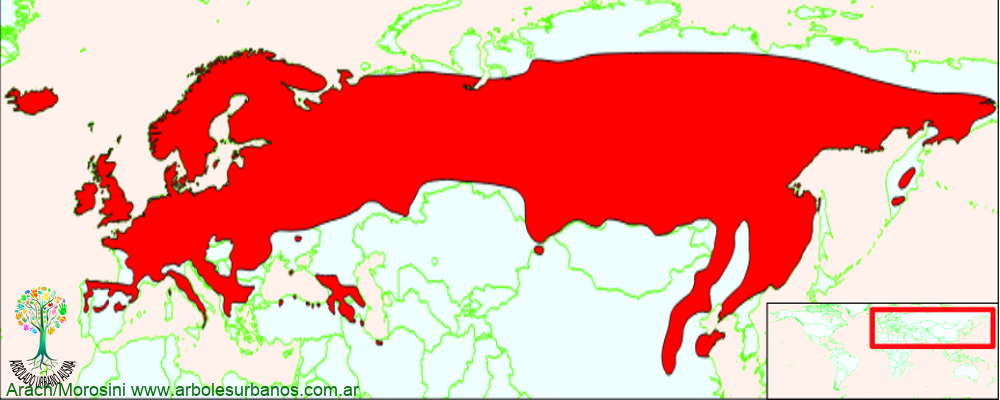

Click en las imágenes para ampliar

{kind=link}
{kind=link}
{kind=link}
{kind=link}
{kind=link}
- NOMBRE CIENTÍFICO
- Sorbus aucuparia
- FAMILIA BOTÁNICA
- Rosáceas
- DESCRIPCIÓN GENERAL
- Es un árbol mediano que alcanza los 15 metros de altura como máximo, tiene una copa anchamente cónica, que nace de un tronco único que se ramifica a baja altura. Su corteza juvenil es lisa y brillante de color gris y a veces ambarino, en la madurez es oscura y hendida longitudinalmente. Sus hojas son compuestas, pinadas de 20 cm. de largo, presentan de 5 a 15 folíolos oblongos de ápice agudo y borde dentado, son de hasta 6 cm. de largo y 2 de ancho, de color verde oscuro en su haz y verde azulado en su envés. En otoño cambian a tonos que van del amarillo al ocre, pasando por el rojo, para luego desprenderse en el invierno.
- FLORES
- Sus flores aparecen a mediados de primavera, están compuestas por 5 pétalos, son pequeñas de color blanco, forman grandes inflorescencias (corimbos) de hasta 15 cm. de ancho.
- FRUTOS
- Los frutos maduran a principio de otoño, son bayas esféricas, pequeñas de aproximadamente 1 cm. de diámetro, de color rojo o anaranjado, reunidos en grupos que le dan un aspecto característico.
- ORIGEN
- Este árbol es nativo de Europa, norte de África y Asia menor
- USOS
- Esta especie tiene una madera dura, elástica, textura fina y duramen de color rojizo, se la utiliza en tornería, para producir pequeñas piezas, debido al porte de su fuste. Es una especie muy utilizada como ornamental en distintos países. En su lugar de origen las bayas se utilizan en medicina popular.
- REPRODUCCIÓN
- Se lo puede reproducir por semillas, aunque a veces tardan 2 años en germinar, necesariamente deben tener de 6 a 8 meses de estratificación, otra opción es que lo coman las aves de corral para realizar una escarificación química en su tracto digestivo y así romper el letargo y favorecer la germinación. También se lo reproduce por estacas provenientes de los retoños basales.
- PARTICULARIDADES
- Los frutos son consumidos por los pájaros que dispersan su semilla. Antiguamente se lo plantaba en las tierras altas de Escocia, como protección contra los malos augurios.